WO
ZO20:00
ZO20:00
Jamsessie
Elke woensdag- en zondagavond. Steeds een andere sessieleider, en een complete backline staat klaar, van drumstel tot versterkers. Doe mee of kom gewoon kijken.
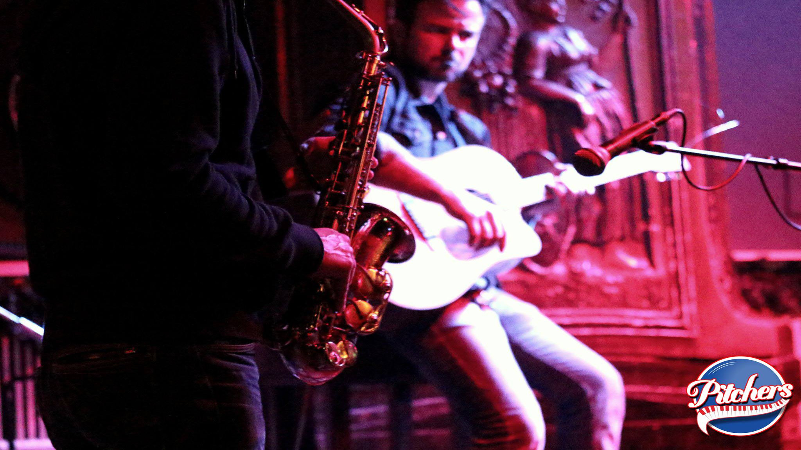
Groenmarkt 7, Amersfoort
Jouw café voor een compleet verzorgde avond uit. Lunch, diner, een borrel en vrijwel dagelijks live muziek. Bij live muziek heffen we geen entree.
Akoestische acts, bands, dj's en jamsessies. Elke week treden er meerdere acts en dj's op. Gezelligheid staat voorop: bij live muziek houden we het voor iedereen toegankelijk door geen entree te heffen.
Elke woensdag- en zondagavond. Steeds een andere sessieleider, en een complete backline staat klaar, van drumstel tot versterkers. Doe mee of kom gewoon kijken.
Elke laatste donderdag van de maand komen comedians uit het hele land hun beste grappen vertellen en nieuw materiaal uitproberen. Ben jij niet al te serieus? Kom lachen bij Pitchers.
Donderdag 31 december, van 16:00 tot 03:00.
Live bands, vinylavonden en meer: de actuele agenda staat op onze Facebookpagina.
Een gevarieerde keuze aan frisdrank en alcoholische dranken, van speciaalbier van de tap tot koffie van een barista.
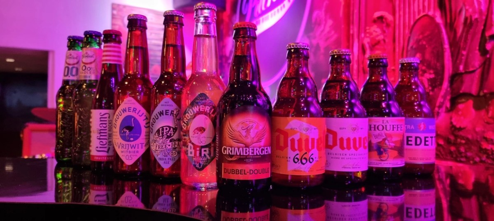
Een behoorlijk assortiment speciaalbier, en genoeg keuze in alcoholvrij en alcoholarm. Pils tappen we van Grolsch.
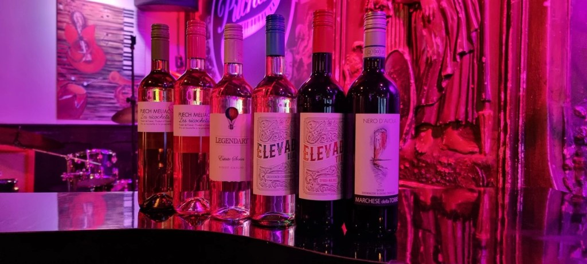
Geschonken in kristallen glas. De Elevado is heerlijk op het terras of als borrelwijn aan de bar.
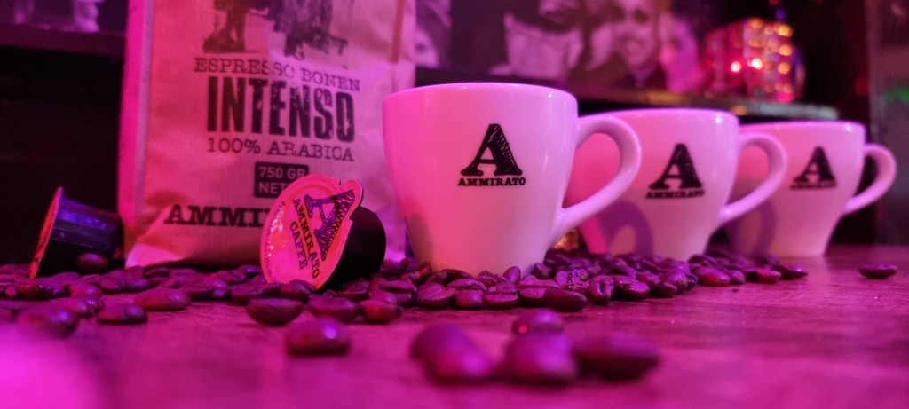
Eerlijke fairtrade koffie met een uitgebalanceerde smaak, gezet door personeel met een barista-opleiding.
Pitchers staat bekend om zijn jamsessies, waar beginnende muzikanten een podium krijgen. Maar ook muzikanten die al in bands van naam spelen komen hier graag samen spelen.
Pitchers stelt instrumenten en versterking beschikbaar als daar met zorg mee wordt omgegaan. Neem gerust je eigen gitaar, bas, blaasinstrument of ander instrument mee. Houd er rekening mee dat het om muziek maken gaat, niet om het ombouwen van het podium en wisselen van instrumenten.
De sessieleider probeert iedere aanwezige muzikant zijn moment te geven, in steeds andere combinaties. De stijlen zijn heel divers, afhankelijk van wat de muzikanten kunnen spelen. Er wordt altijd een poging gedaan om ook jouw stijl te spelen, en dat lukt meestal met verrassende resultaten.
Graag ontvangen wij jullie act op ons kleine, intieme podium. Er is een complete backline en altijd iemand die het geluid regelt. Optredens zijn vrij toegankelijk voor bezoekers. Stuur je info naar info@cafepitchers.nl.
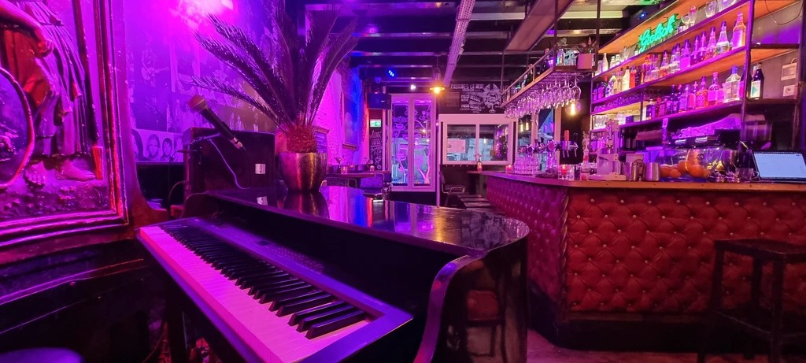
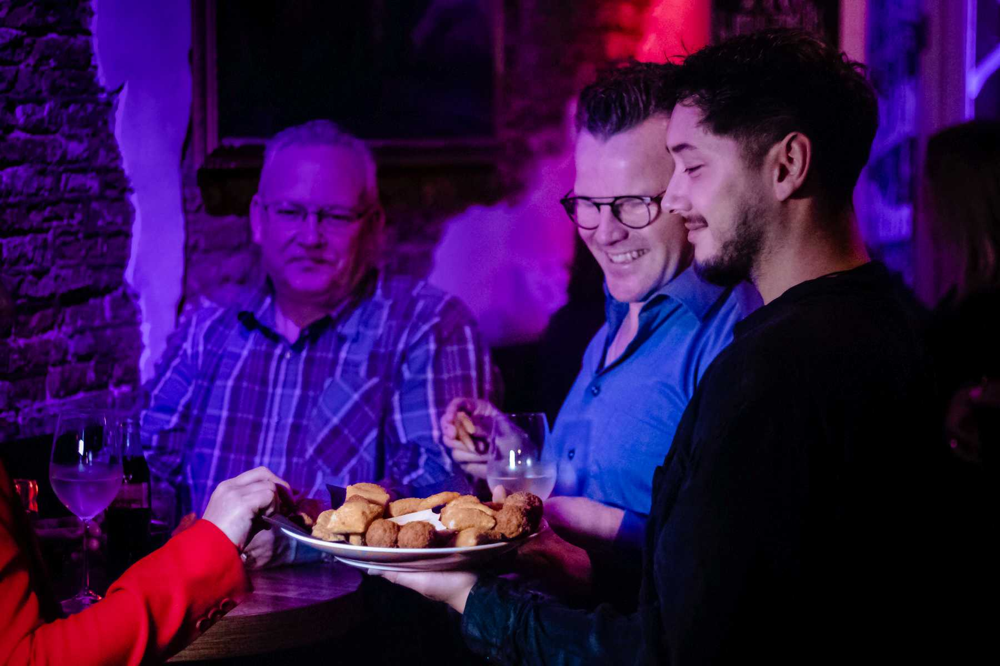
Bij ons is het heel snel gezellig. Er is vaak live muziek of er draait een dj, en je kunt lekker dansen. In ons menu vind je een ruime keuze aan hapjes, drankjes, broodjes en diner. We gaan graag met je in gesprek, zodat we een voorstel kunnen doen dat bij jouw wens past.
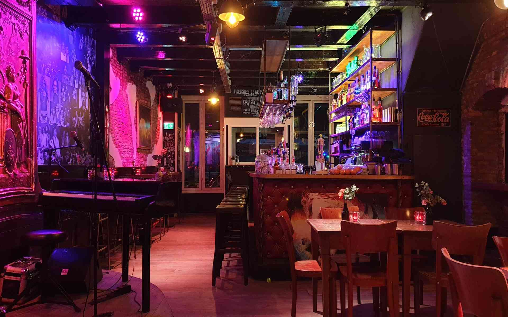
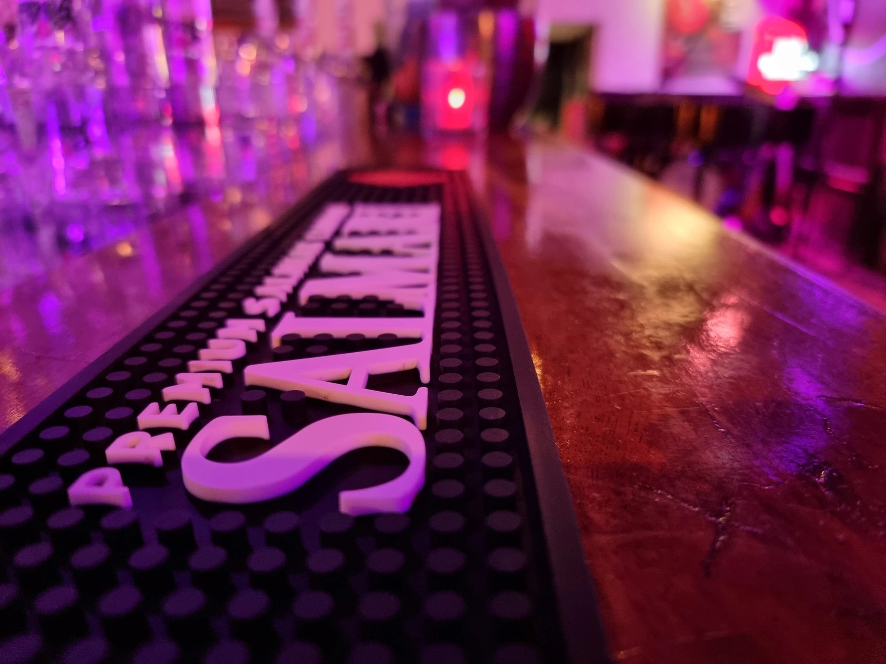
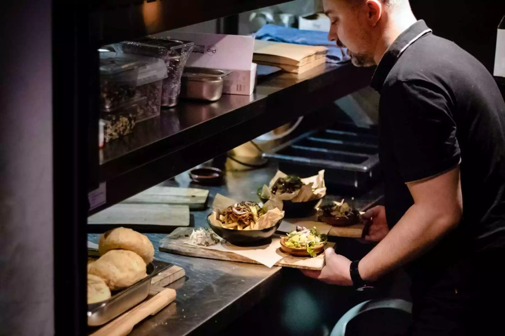
Vincent van Brakel nam dit café in 2015 over. Na vele aanpassingen in uitstraling en concept is Pitchers nu het muziekcafé van Amersfoort, en inmiddels een begrip in de stad en omstreken. Muzikanten krijgen hier op allerlei manieren een podium, met optredens en jamsessies. Ook als er geen live muziek is, ben je welkom voor een drankje en een hapje.
Bij een verbouwing, noodgedwongen door de coronapandemie, kwam er een vernieuwde keuken. Muziek staat nog steeds centraal, maar eten is ook heel belangrijk geworden.
Pitchers ligt aan het gezelligste plein van Amersfoort, de Groenmarkt, met een terras met zicht op de Sint-Joriskerk en het beeld van Sint Joris en de draak. Pitchers blijft vernieuwen en met de tijd meegaan, maar laat met muziek, artiesten en eten ook oude tijden herleven.
Wat Pitchers je biedt: vriendelijk en behulpzaam personeel, een laagdrempelige ambiance voor jong en oud, en vrijwel dagelijks live entertainment.
Pitchers is verbonden aan de Stichting Groenmarkt, die het gezellig wil maken op het plein. De stichting organiseert vooral muzikale activiteiten als de terrassen buiten staan. Het plein is kleiner dan het Lieve Vrouweplein en de Hof, maar heeft net zoveel te bieden, met de Sint-Joriskerk als prachtig decor.
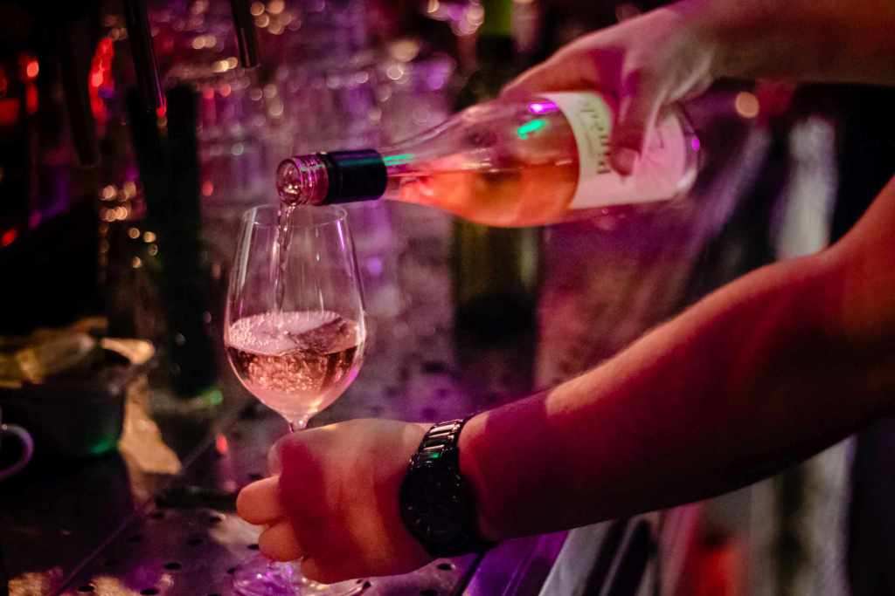
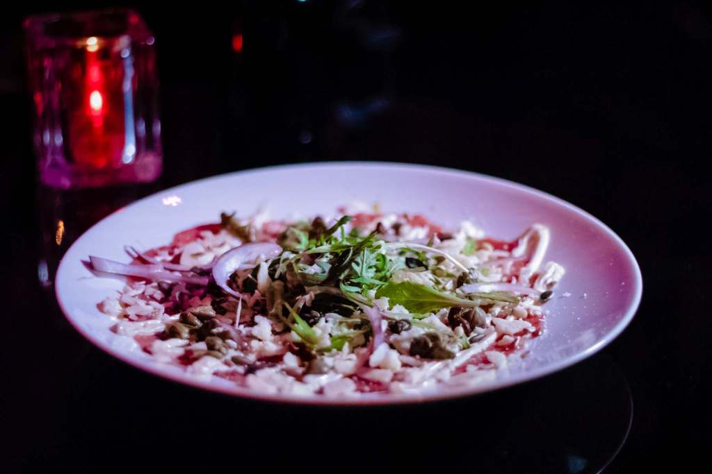
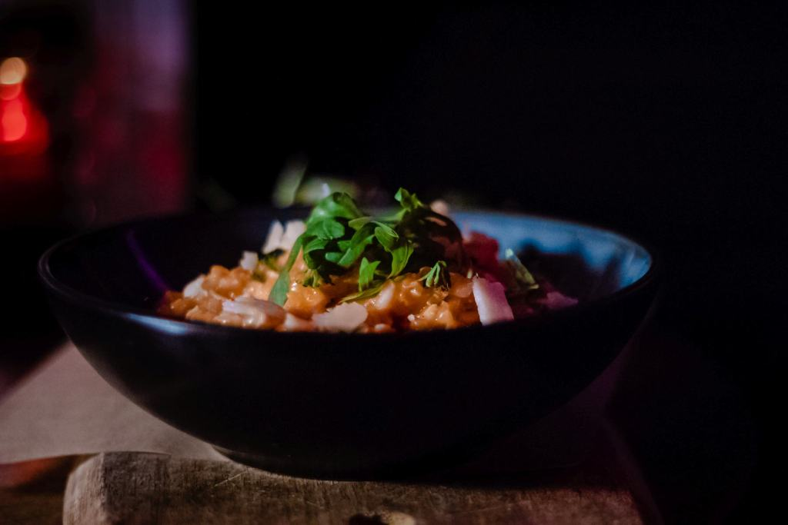
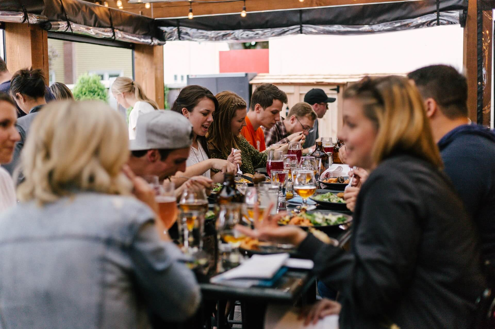
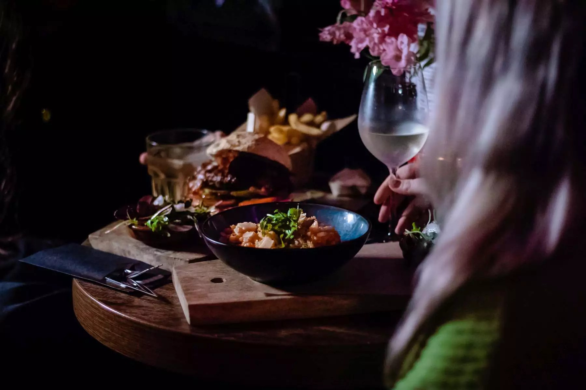
Een kleine zaak met een gezellig team, en de fooien worden wekelijks verdeeld onder al het personeel. Reageren? Stuur je cv naar info@cafepitchers.nl of bel 033 479 6926 en vraag naar Vincent of Mathies.
Je runt onze keuken en bereidt de gerechten van onze kaart. Je zorgt voor de voorbereiding en voor een nette, schone keuken.
Een koksopleiding is geen vereiste: er is ruimte om te leren en te groeien. Wel zoeken we passie voor eten, en iemand die gasten altijd kwaliteit wil geven.
Allround: de keuken schoonhouden, ingrediënten aanvullen, de kok ondersteunen en gerechten bereiden.
Ervaring is niet nodig, wij leren je het vak. Je houdt van lekker eten en bent beschikbaar in het weekend.
Je draait samen met de kok de keuken, zorgt voor een schone vaat en werkplek, en ondersteunt de kok met bijvullen en het bereiden van gerechten.
Wil je een tafel reserveren, iets voor je gezelschap regelen of heb je een vraag? Bel ons, of mail gerust.
| Maandag | 17:30 – 01:00 |
| Dinsdag | 17:30 – 01:00 |
| Woensdag | 16:00 – 02:00 |
| Donderdag | 12:00 – 02:00 |
| Vrijdag en zaterdag | 12:00 – 03:00 |
| Zondag | 12:00 – 02:00 |
Parkeergarage Flintplein of Q-Park Beestenmarkt. Vanuit de garage is het ongeveer 10 minuten lopen.
Kijk voor tarieven en openingstijden op de website van de parkeergarage.